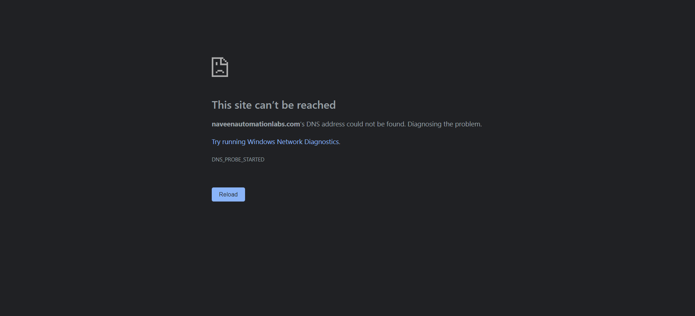

Started
Jun 26, 2022 05:57:19 PM
Ended
Jun 26, 2022 05:57:48 PM
Features Passed
0
Features Failed
2
Features
Scenarios
Steps
Timeline
System/Environment
| Name | Value |
|---|---|
| AppName | AutomationPractice |
| user | Anshul |
| build | 1.1 |
| os | Windows |
-
Account page feature
17:57:20 PM / 00:00:11:376 Fail
Account page feature
06.26.2022 17:57:20 06.26.2022 17:57:31 00:00:11:376 · #test-id=1FailAccount page titleGiven user has already logged in to applicationusername password anshulpurohit91@gmail.com Selenium1234 Given user is on account pageStep skippedWhen user get the title of the pageStep skippedThen page title should be "My Account"Step skippedappHooks.ApplicationHooks.teardown(io.cucumber.java.Scenario)Account page title FailAccount Section countGiven user has already logged in to application
FailAccount Section countGiven user has already logged in to applicationusername password anshulpurohit91@gmail.com Selenium1234 Given user is on account pageStep skippedThen user get account sectionMy Account My Orders My Affiliate Account Newsletter Step skippedAnd Account section count should be 4Step skippedappHooks.ApplicationHooks.teardown(io.cucumber.java.Scenario)Account Section count -
Login Page Failure
17:57:31 PM / 00:00:16:403 Fail
Login Page Failure
06.26.2022 17:57:31 06.26.2022 17:57:48 00:00:16:403 · #test-id=20FailLogin page titleGiven user is on login pageWhen user get the title of the pageStep skippedThen page title should be "Account Login"Step skippedappHooks.ApplicationHooks.teardown(io.cucumber.java.Scenario)Login page titleFailForgot password linkGiven user is on login pageThen Forgot your password link should be displayedStep skippedappHooks.ApplicationHooks.teardown(io.cucumber.java.Scenario)Forgot password link FailLogin with correct credentialsGiven user is on login pageWhen user enters username "anshulpurohit91@gmail.com"Step skippedAnd user enters password "Selenium1234"Step skippedAnd user clicks on login buttonStep skippedThen user get the title of the pageStep skippedAnd page title should be "My Account"Step skippedappHooks.ApplicationHooks.teardown(io.cucumber.java.Scenario)Login with correct credentials
FailLogin with correct credentialsGiven user is on login pageWhen user enters username "anshulpurohit91@gmail.com"Step skippedAnd user enters password "Selenium1234"Step skippedAnd user clicks on login buttonStep skippedThen user get the title of the pageStep skippedAnd page title should be "My Account"Step skippedappHooks.ApplicationHooks.teardown(io.cucumber.java.Scenario)Login with correct credentials
-
org.openqa.selenium.WebDriverException
1 tests
org.openqa.selenium.WebDriverException
1 failedStatus Timestamp TestName Fail 17:57:25 PM Given user has already logged in to application Account page feature.Account page title.Given user has already logged in to applicationFail 17:57:30 PM Given user has already logged in to application Account page feature.Account Section count.Given user has already logged in to applicationFail 17:57:36 PM Given user is on login page Login Page Failure.Login page title.Given user is on login pageFail 17:57:41 PM Given user is on login page Login Page Failure.Forgot password link.Given user is on login pageFail 17:57:47 PM Given user is on login page Login Page Failure.Login with correct credentials.Given user is on login page